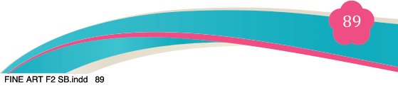
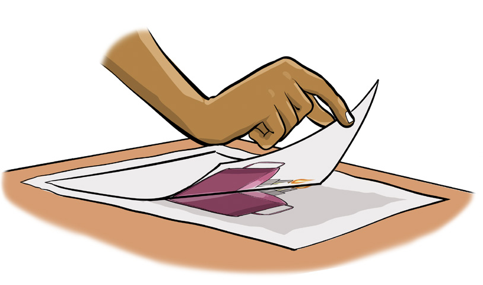
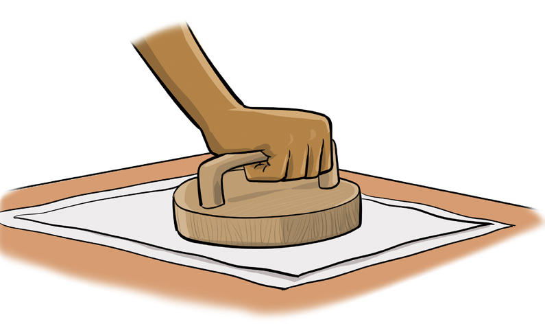
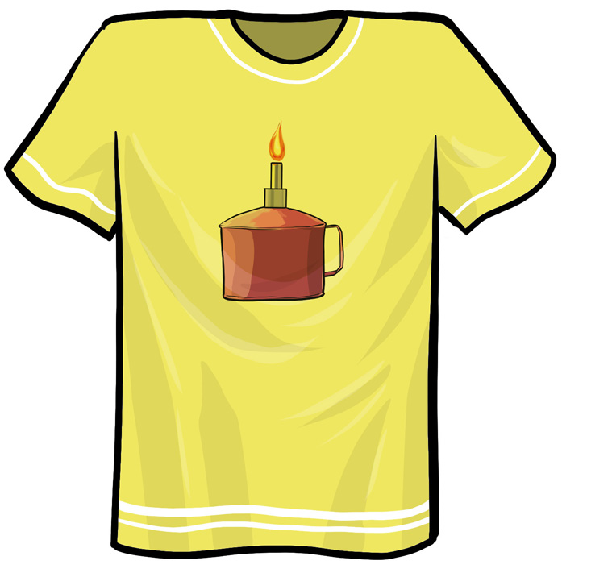

Fine Art for Secondary Schools

89

Student’s Book Form Two


Figure 5.7 (a) and (b): The process of transferring the design
Step 5: Evaluate and refine
Once you have created your print,
assess its quality. Look for areas that
might need improvement, such as
uneven ink coverage or areas where
the design did not transfer as expected.
Then, make adjustments for your
next prints. For example, you might experiment with different textures or
layering techniques to improve the
overall effect. You could as well try
using a different type of brush, adding
more layers of colour, or changing the
pressure you apply when transferring
the print. Keep refining your process to achieve the best result. Figure 5.8 shows the final design on a T-shirt.
Techniques used to create simple functional monoprints
There are several techniques to make a functional monoprint the following four methods are commonly used:
(a) Additive (Direct drawing or painting on the plate):
Direct drawing or painting on the plate is a monoprinting technique where an artist applies ink directly to a printing plate and then creates a design by manipulating the ink using various tools or hands.
Materials and tools:
(i) Printing plate (e.g., acrylic sheet, glass, or metal plate).
(ii) Printing ink (oil-based or water-based)

Figure 5.8: Final design on a T-shirt

04/08/2025 13:54